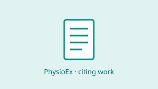

Related Works#
Publications and preprints that cite or build on PhysioEx. The list is
refreshed from OpenAlex — see
docs/related/fetch_citations.py.
Using PhysioEx in your research? Please cite the paper:
@article{10.1088/1361-6579/adaf73,
author = {Gagliardi, Guido and Alfeo, Luca and Cimino, Mario G C A and
Valenza, Gaetano and De Vos, Maarten},
title = {PhysioEx, a new Python library for explainable sleep staging
through deep learning},
journal = {Physiological Measurement},
url = {http://iopscience.iop.org/article/10.1088/1361-6579/adaf73},
year = {2025},
}
Published

Rahul Thapa, Magnus Ruud Kjær, Bryan He, Ian Covert, et al. · Nature Medicine · 2026
Abstract Sleep is a fundamental biological process with broad implications for physical and mental health, yet its complex relationship with disease remains poorly understood. Polysomnography (PSG)—the gold standard for sleep analysis—captures rich physiological signals but is …

Tehreem Fatima Zaidi, Abhishek Dixit, Deepak Joshi, Shiv Dutt Joshi · IEEE Journal of Biomedical and Health Informatics · 2026
Polysomnography (PSG)-based accurate sleep staging is essential to monitor sleep quality and sleep-related disorders. The authors propose a framework based on the polynomial chirplet transform-derived characteristic response vector (PCT-CRV) to assess sleep stages and track transitions between them …
Eran Zvuloni, Guido Gagliardi, Antônio H. Ribeiro, Antônio Luiz Pinho Ribeiro, et al. · Machine Learning Health · 2025
A multi-source domain fine-tuning framework for deep generalization performance in physiological time series analysis, Zvuloni, Eran, Gagliardi, Guido, H Ribeiro, Antônio, Luiz P Ribeiro, Antonio, De Vos, Maarten, Behar, Joachim A
Haitham Jahrami, Waqar Husain, Khaled Trabelsi, Thomas Penzel, et al. · Sleep Medicine Reviews · 2025
BACKGROUND Artificial intelligence (AI) has rapidly advanced in sleep medicine, offering innovative solutions for sleep disorder management. The integration of AI technologies presents unprecedented opportunities to address longstanding challenges in diagnosis, monitoring, and …
Guido Gagliardi, Antonio Luca Alfeo, Mario G.C.A. Cimino, Gaetano Valenza, et al. · IEEE International Conference on Systems, Man and Cybernetics · 2025
Sleep disorders and their diagnosis are a significant public health concern. Automated sleep stage classification using deep learning models has shown promising results, but these models often lack transparency and interpretability. In this study, we propose an eXplainable …
Preprints
Guido Gagliardi, Javier García Ciudad, L. Micca, B. R. Kornum, et al. · Research Square · 2026
While sleep is fundamental to human health, sleep disturbances reduce quality of life and constitute risk factors for neurodegenerative diseases including Parkinson’s and Alzheimer’s. Automated sleep staging networks achieve human-level performance on multimodal physiological …